VerticalMill L3
A grey box model for a hard coal mill comprehending both, ball-and race and bowl mills.
The model is taken from Niemczyk et al. [1]. It provides information about the time-dependent behaviour of vertical roller bowl mills concerning mass and energy storage. The model is based on mass balances and energy balances but there are a number of parameters that must be determined by evaluation of measurement data (this is why it is referred to as a grey box model). The model also takes short-term changes of the classifier speed into account.
1. Purpose of Model
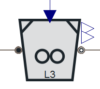
The model is appropriate whenever the pulverised coal mass flow and its temperature shall be calculated depending on the corresponding mass and energy flows and the classifier speed. Please be aware that the available parameter sets refer to specific mills and are taken from the literature, see [1]. Start up and shut down of the mill is not modelled.
2. Level of Detail, Physical Effects Considered and Physical Insight
2.1 Level of Detail
Referring to Brunnemann et al. [2], this model refers to the level of detail L3 because the mill is subdivided into three balance rooms, namely the storage volumes of raw coal on the table, the storage volume of pulverised coal on the table and the pulverised coal in the primary air.
2.2 Physical Effects Considered
- Mass storage in the above named control volumes taking classifier speed into account.
- Mass transport between the storage volumes due to phenomenological considerations.
- Energy storage in the mill, the temperature is homogeneously distributed.
- Static pressure loss calculation, no shock waves considered.
- Dry out of the coal, the water of the raw coal is transferred to the moist gas flow.
2.3 Level of Insight
No different levels of insight are available
3. Limits of Validity
The limits of validity are reached if one of the following assumptions lose validity:
- Perfect grinding process, i.e. the pulverised coal has only one particle size.
- The table is filled with raw coal such that the grinding process can take place, i.e. the table is neither overfilled nor empty.
- The temperature is homogeneously distributed.
- No shock waves are of relevance for the component behaviour.
4. Interfaces
4.1 Physical Connectors
ClaRa:Basics:Interfaces:FuelFlueGas inlet inlet
ClaRa:Basics:Interfaces:FuelFlueGas outlet outlet
4.2 Real Inputs
- ClassifierSpeed
- GrindingStatus (conditional by setting the Expert Setting activateGrindingStatus==true)
4.3 Real Outputs
- Delta_p_mill Pressure difference between inlet and outlet
- P_mills Power of all mills in parallel
5. Nomenclature
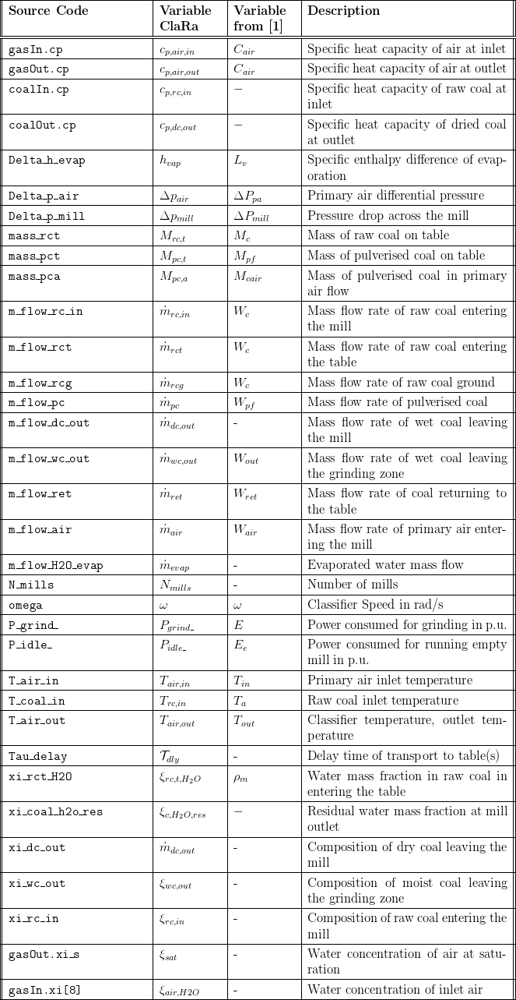
6. Governing Equations
6.1 System Description and General Model Approach
The raw coal falls through a vertical funnel onto the grinding table. The coal is pulverised utilising rolling bowls or balls rolling over the grinding table. The pulverised coal is lifted by the primary air flow that transports the coal to the classifier section. Due to centrifugal forces that act on the coal particles only the smaller ones exit the mill, coarse particles fall back to the grinding table, see the figure below. The phenomenology of the grinding process allow to distinguish three main mass storages within the mill, namely the unground coal on the table, the ground coal on the table and the pulverised coal in the air volume of the mill. In the figures below, these mass are highlighted in blue, green and red, respectively.
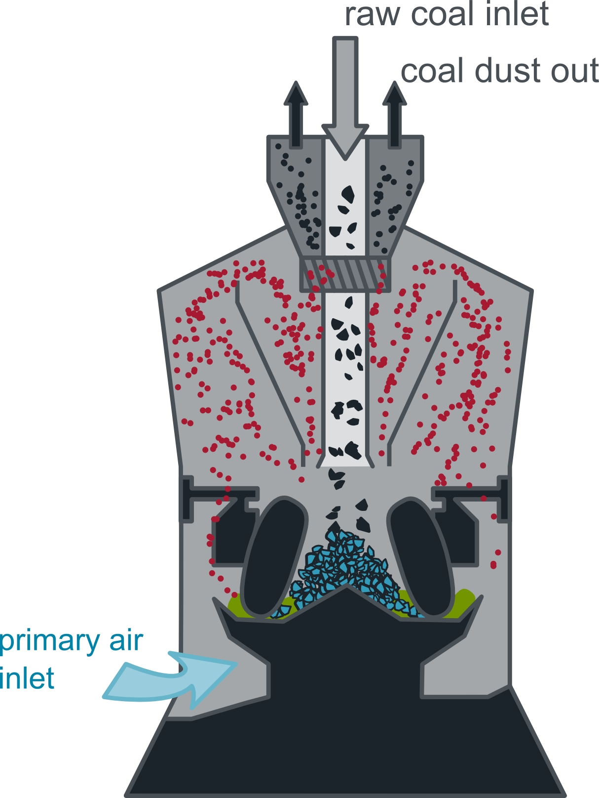 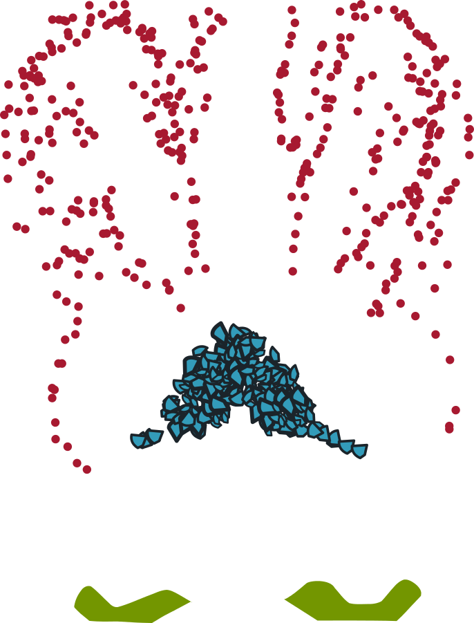
In principle, the air mass in the mill is negligible compared to the coal masses and therefore the air mass balance will be steady state. Furthermore we assume that the drying process does not limit or interfere the grinding process. This allows us to model the grinding process and the drying process as to separate and sequentially run processes, see figure below.
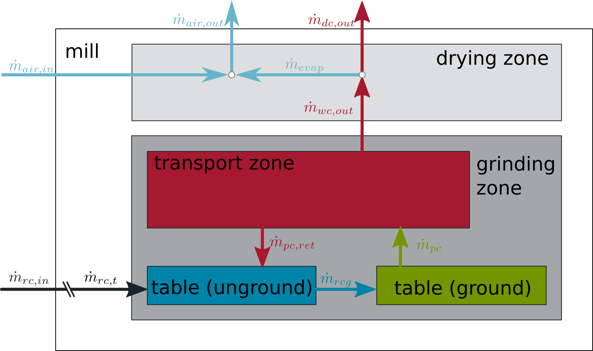
6.2 Governing Model Equations
The following set of equations hold for one mill. A constant number of mills can be assembled in parallel (behaving exactly the same) by setting the parameter N_mills appropriately.
The presented model takes the following mass storages into account:
- Mass of raw coal on the table (blue highlighted in figure above)
- Mass of pulverised coal on the table (green highlighted in figure above)
- Mass of pulverised coal carried by the primary air (red highlighted in figure above).
The Grinding Process
For these balance rooms a mass balance is derived:
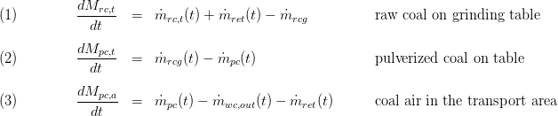
The mass flow rates between the balance rooms are calculated using simple algebraic equations without involving the physical effects:
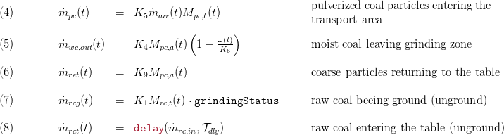
The given set of equations does not take different sizes of particles into account, i.e. the coal is either pulverised or not. Please note that there is no mass storage for air or water in the system which is fine as the water and air mass in the mill is usually considerably smaller than the coal mass.
The transport coefficients arising from this simple phenomenological approach have to be quantified by fitting the model results to measurement data. However, all of these coefficients have a meaningful physical background and some of them could be calculated from geometric parameters or even replaced when applying more physical model approaches. For the sake of simplicity of the model the latter mentioned options where not pursued.
The following coefficients are involved so far:
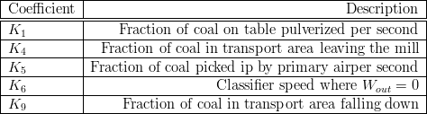
The average composition of moist coal in the grinding zone is calculated as follows:

Coal Drying
The moist and pulverised coal coming from the grinding zone is dried before it leaves the mill. The drying is ideal and infinitely fast leading either to complete dry coal or fully saturated moist air:
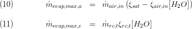
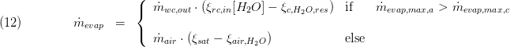
The dry coal mass flow and its composition is calculated via static mass and species balance equations for the drying zone:

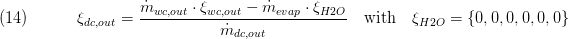
Accordingly, the outlet gas mass flow and its composition is calculated:
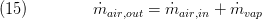
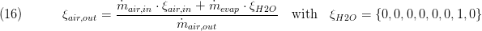
Note that coal drying affects the lower heating value and the specific heat capacity of the transport gas phase and the coal. These effects are caught by the according media models.
Energy Conservation
In order to define the outlet states of the coal and the primary air a global energy balance for the complete mill including the complete interior equipment as well as the stored coal is applied:
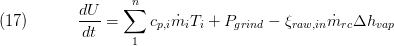
This formula involves convective transport of enthalpy across the boundaries and the energy input due to the grinding process as well as the power necessary for evaporation of the coal's moisture. The corresponding equation (7) from [1] neglects the derivatives 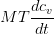 and 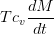 arising from the left-hand term of the upper equation due to minor importance. The neglected terms are added for the sake of completeness. Furthermore, in equation (7) of [1] the enthalpy flow of the coal moisture leaving the mill is implicitly calculated applying the coal's specific heat capacity which introduces an error in the energy balance and was corrected in this model.
In modification of the literature the coal dust leaving the mill through the corresponding connector is completely dried. The evaporated water is transported by the primary air, i.e. the coal dust duct is split into a part transporting the dry coal and a part transporting the moist primary air including the water content of the raw coal.
This leads to:
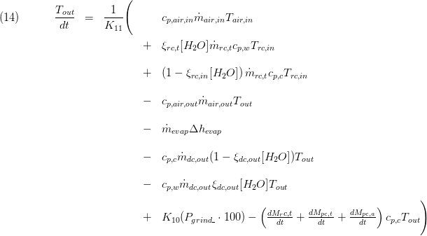
The power applied for disintegration of the coal in W/(p.u.load)is:
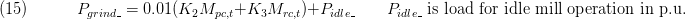
Herein, two further coefficients are used:
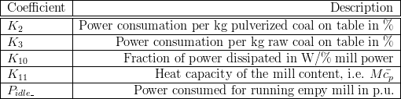
Hydraulics
In order to gain information of the mill's coal charge the pressure drop is of interest. This is a function of the coal mass in the transport area and a friction pressure drop due to the mass transport through the mill and a geodetic pressure difference depending on the coal particle mass in the transport area :

This introduces two more coefficients:
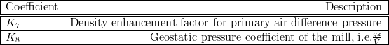
The pressure drop due to friction was taken as an input by [1] but can be calculated using a equation of the form:
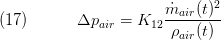
thus adding one more coefficient:
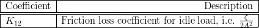
Shutdown
The conditional Real input grindingStatus can be used to stop the grinding process. grindingStatus=1 refers to full operation, grindingStatus=0 to a completely stopped grinding.
Summary
A summary record is available which bundles important component values.
7. Remarks for Usage
- Adjust N_mills to assemble a constant number of mills in parallel. These mills will behave exactly the same, i.e. the mass flows at the connectors are multiplied by the constant factor N_mills.
8. Validation
For validation of the model the scenario documented in [1] was rebuilt and compared with the model results of [1] and the measurement data used for calibration. For validation mill 4 of the Danish power plant at Stignaes was chosen. This mill is one of the widely used Babcock & Wilcox type 10E ball and race mills.
8.1 Scenario Description
The validation scenario comprehends 100 min of normal operation of the coal mills with the main boundary conditions as can be seen in the three figures below. The raw coal has a moisture content of 6.8 %, the primary air was said to be completely dry and the heat capacity of the coal was set to 1449 J/kg. The last mentioned value was found to be crucial for the proper calculation of the outlet temperature but was not defined in [1]. The coal's specific heat capacity was therefore adjusted to fit the measurements well.
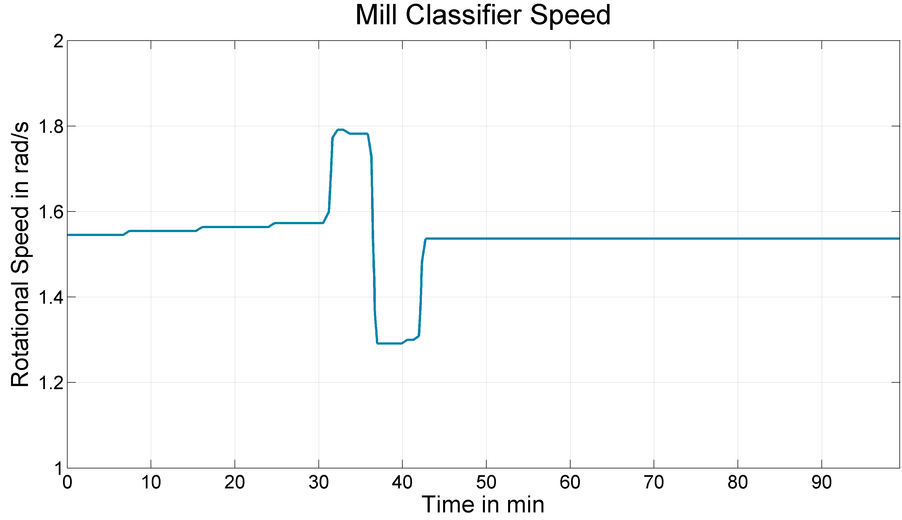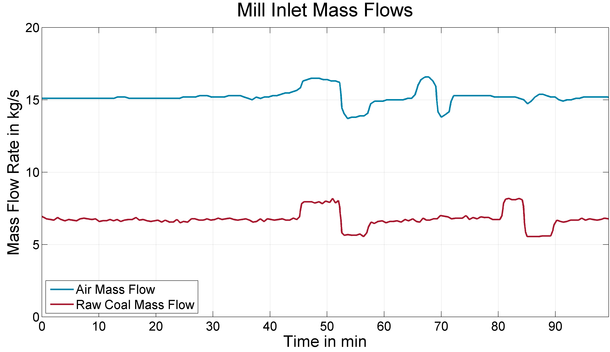
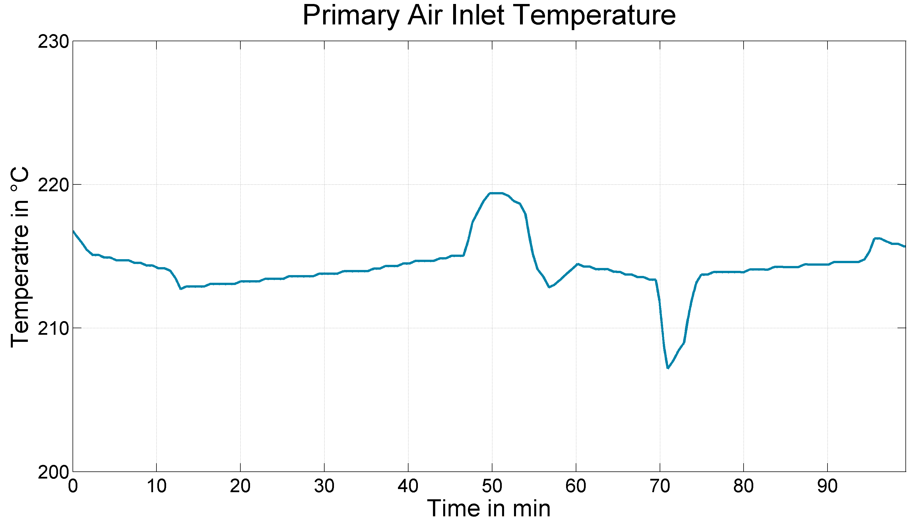
8.2 Validation Results
Concerning the mill's power and the mass flow rate the Modelica model agrees perfectly with the model from the literature and the values also comply with the measurement data. Please note that the occurring bias error of the measurement data was also reported in [1].
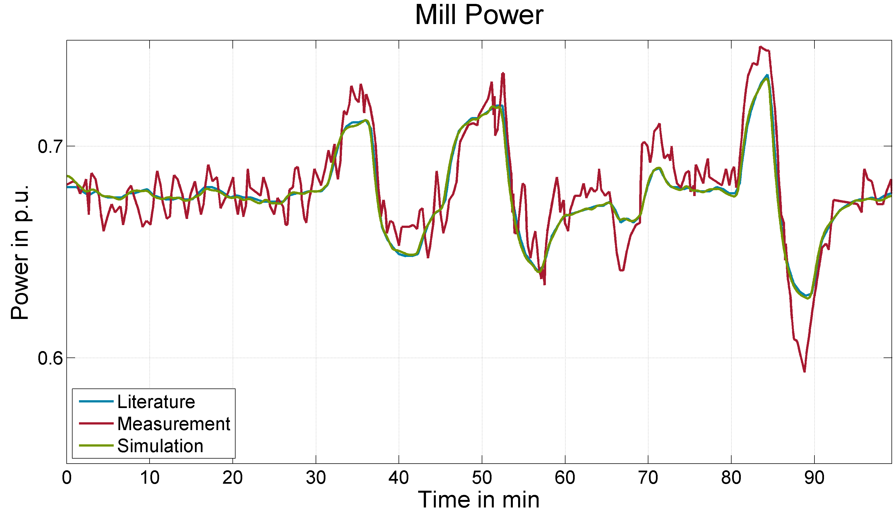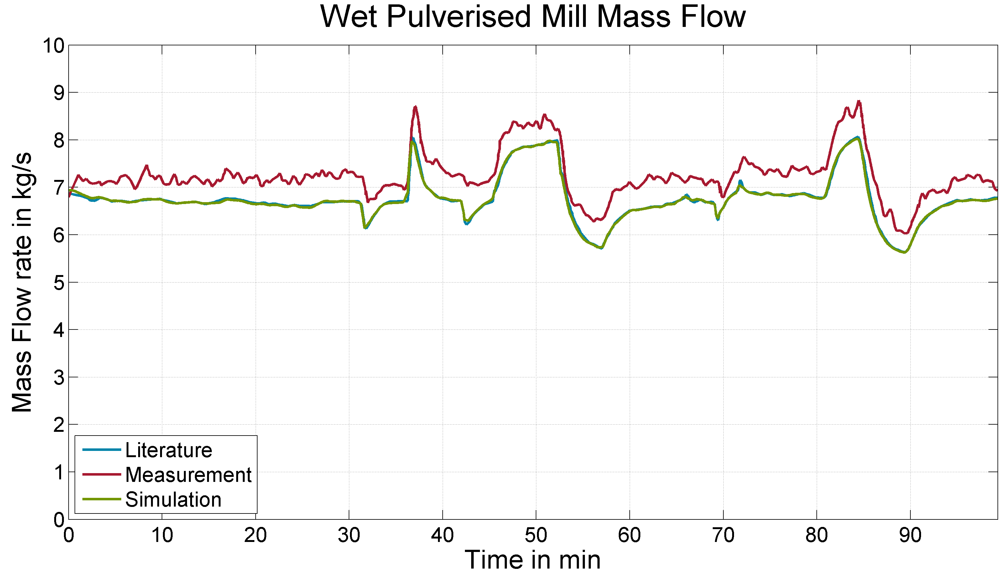
The simulated outlet temperature is similar to the literature's model but with a slightly better better performance when it comes to fast load changes which is due to the included deviation terms as mentioned above. However, the accuracy of the model is limited because only one lumped energy balance is applied for the whole mill. The mill's pressure loss also shows slight deviations from the literature because in the Modelica model no measurement of the primary air differential pressure was assumed and the pressure loss was calculated using a simple quadratic model. This model shows good results compared with the given measurements.
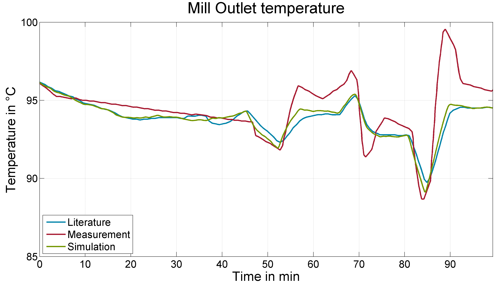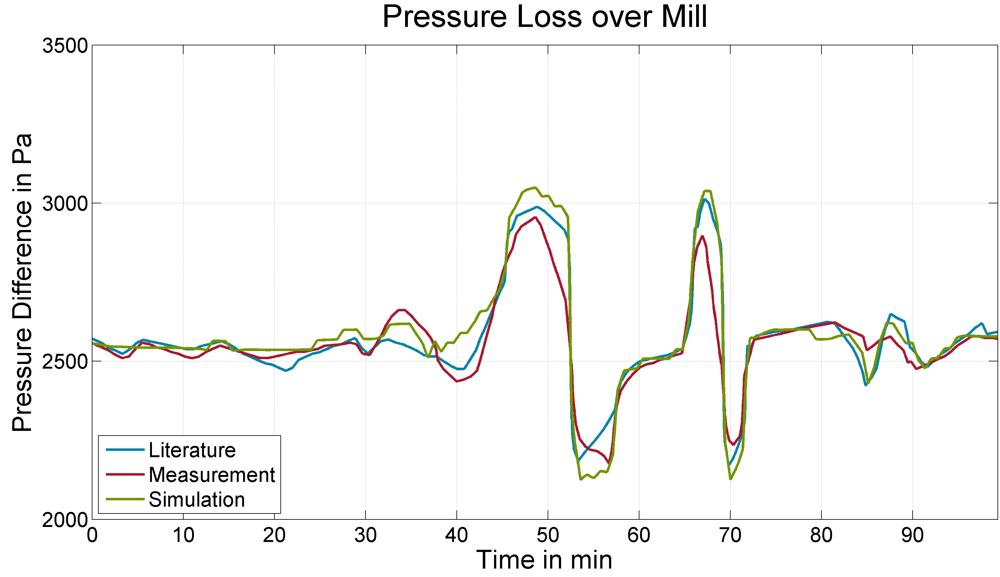
9. References
[1] Piotr Niemczyk and Palle Andersen, Jan Dimon Bendtsen, Tom Søndergaard Pedersen, Anders Peter Ravn: "Derivation and validation of a coal mill model for control", IFAC Symposium for Power Plant Simulation and Control, Tampere, Finland, 2009.
[2] Johannes Brunnemann and Friedrich Gottelt, Kai Wellner, Ala Renz, André Thüring, Volker Röder, Christoph Hasenbein, Christian Schulze, Gerhard Schmitz, Jörg Eiden: "Status of ClaRaCCS: Modelling and Simulationof Coal-Fired Power Plants with CO2 capture", 9th Modelica Conference, Munich, Germany, 2012
10. Version History
2011-08-03 - v0.1 - initial implementation - Friedrich Gottelt, XRG Simulation GmbH
2012-04-20 - v0.2 - introduced the new combined gas-and-coal connectors and new definition of coal types - Friedrich Gottelt, XRG Simulation GmbH
2012-09-17 - v0.3 - corrected the energy balance and corrected the coal specific heat capacity for the validation scenario - Friedrich Gottelt, XRG Simulation GmbH
2016-01-30 - v0.4 - implemented variable heating value due to drying of coal - Lasse Nielsen, TLK-Thermo GmbH
2016-07-04 - v0.5 - bugfixed coal species balance and overall energy balance - Friedrich Gottelt, XRG Simulation GmbH
2016-09-15 - v0.6 - bugfixed calculation of dried coal's specific heat capacity and LHC - Lasse Nielsen, TLK-Thermo GmbH and Friedrich Gottelt, XRG Simulation GmbH - thanks to Marcel Richter, University of Duisburg-Essen
2017-01-25 - v1.2.0 - introduced expert setting activateGrindingStatus which makes it possible to stop the grinding process when the mill is shutdown - Timm Hoppe, XRG Simulation
GmbH - thanks to Marcel Richter, University of Duisburg-Essen
2018-03-01 - v1.3.0 - introduced new fool proof fuel definition
- introduced parameter for residual coal humidity at outlet
- renamed a number of local variables - Friedrich Gottelt, XRG Simulation GmbH